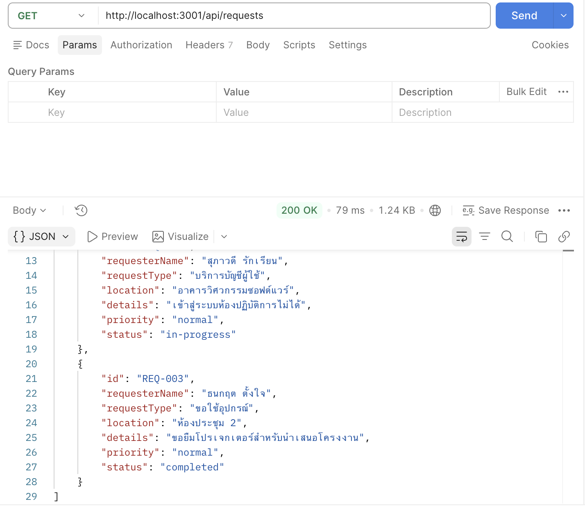
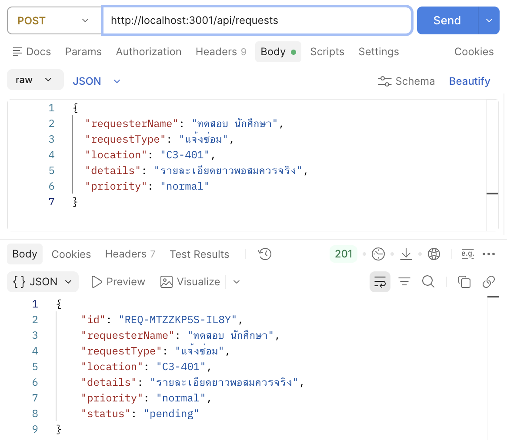
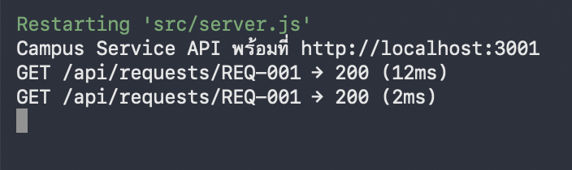

รายละเอียดผลงาน
Express CRUD API พร้อม validation, error handling และหลักฐานการทดสอบ HTTP
ผลตรวจ: งานหลัก 25/25Version:
lab-06-submission-v1ภาพหลักฐาน (3)






เอกสารและผลการทดสอบ
API_TEST.md
# API_TEST — LAB 06
**ชื่อ–รหัส:** ปริยากร ธารพรศรี 68543210013-7 **วันที่ทดสอบ:** 13/09/2026
> บันทึก **ผลจริง** ที่เห็น ไม่ใช่ผลที่ควรได้ · ถ้าไม่ผ่านให้เขียนว่าไม่ผ่าน
| # | Method | Path | ส่งอะไร | status ที่ควรได้ | status ที่ได้จริง | ผ่าน |
|---|---|---|---|---|---|---|
| 1 | GET | `/` | — | 200 | 200 | ☑ |
| 2 | GET | `/api/requests` | — | 200 | 200 | ☑ |
| 3 | GET | `/api/requests/REQ-001` | — | 200 | 200 | ☑ |
| 4 | GET | `/api/requests/REQ-999` | — | 404 | 404 | ☑ |
| 5 | POST | `/api/requests` | ข้อมูลครบถูกต้อง | 201 | 201 | ☑ |
| 6 | POST | `/api/requests` | `{"requesterName":"x"}` | 400 | 400 | ☑ |
| 7 | DELETE | `/api/requests/REQ-003` | — | 204 | 204 | ☑ |
| 8 | DELETE | `/api/requests/REQ-999` | — | 404 | 404 | ☑ |
| 9 | GET | `/api/unknown` | — | 404 | 404 | ☑ |
## ⭐ Challenge (ถ้าทำ)
| # | Method | Path | status ที่ควรได้ | ที่ได้จริง | ผ่าน |
|---|---|---|---|---|---|
| 10 | GET | `/api/requests?status=pending` | 200 (กรองแล้ว) | 200 | ☑ |
| 11 | PUT | `/api/requests/REQ-001` + `{"status":"in-progress"}` | 200 | 200 | ☑ |
| 12 | PUT | `/api/requests/REQ-001` + `{"status":"มั่ว"}` | 400 | 400 | ☑ |
## ทดสอบว่าข้อมูลอยู่ถาวร (CP08)
| ขั้น | ทำอะไร | ผลที่เห็น |
|---|---|---|
| 1 | POST เพิ่มคำร้องใหม่ | เห็นคำร้องใหม่ |
| 2 | GET ดูรายการ — เห็นคำร้องใหม่ไหม | เห็น |
| 3 | Ctrl+C ปิดเซิร์ฟเวอร์ แล้วเปิดใหม่ | |
| 4 | GET ดูรายการอีกครั้ง — คำร้องยังอยู่ไหม | ยังอยู่ |
## สรุปผล
- ผ่าน 9 / 9 (+ Challenge 3 / 3)
- รายการที่ไม่ผ่านและสาเหตุ:
## Screenshot ที่แนบ
- [x] `images/postman-get-200.png`
- [x] `images/postman-post-201.png`
- [x] `images/terminal-logger.png`
AI_USAGE.md
# AI_USAGE — LAB 06
บันทึกการใช้ AI ระหว่างทำงาน · **ใช้ AI ได้ แต่ต้องเป็นเจ้าของโค้ดที่ส่ง**
> ผู้สอนจะสุ่มถามจากโค้ดที่ส่ง — ถ้าอธิบายไม่ได้ คะแนนส่วนนั้นจะถูกทบทวน
---
## ครั้งที่ 1
**ถามอะไร**
ขอให้ AI ช่วยอธิบายขั้นตอนการทำ LAB Week 06 ตั้งแต่ CP01 เป็นต้นไป โดยให้ยึดตาม Guide ของอาจารย์ และบอกจุดที่ต้องเก็บ Screenshot สำหรับ Evidence
**AI ตอบว่าอย่างไร (สรุปสั้น)**
AI ช่วยเรียงขั้นตอนการทำงานตั้งแต่ Route, Controller, Service และ Middleware พร้อมอธิบายการทดสอบ API ด้วย Postman และระบุจุดที่ต้องเก็บ Screenshot เช่น GET 200, POST 201 และ Terminal Logger
**ใช้ส่วนไหน / แก้เองตรงไหน**
ใช้ AI เป็นตัวช่วยอธิบายลำดับและความหมายของโค้ด แต่พิมพ์โค้ดตาม Guide ของอาจารย์และทดลองรันด้วยตนเอง
**เข้าใจโค้ดที่ได้มาไหม**
☑ เข้าใจทั้งหมด
☐ เข้าใจบางส่วน
☐ ยังไม่เข้าใจ
---
## ครั้งที่ 2
**ถามอะไร**
ขอให้ AI ช่วยตรวจปัญหาใน CP08 ที่ข้อมูลไม่คงอยู่หลัง Restart Server
**AI ตอบว่าอย่างไร (สรุปสั้น)**
AI อธิบายว่าฟังก์ชันที่แก้ไขข้อมูลต้องเรียก `persist()` และต้องใช้ `async/await` ให้สัมพันธ์กันระหว่าง Service และ Controller เพื่อให้ข้อมูลถูกบันทึกลง `data/requests.json`
**ใช้ส่วนไหน / แก้เองตรงไหน**
นำแนวทางไปตรวจ `create()`, `remove()`, `loadSeed()` และ Controller จากนั้นทดสอบด้วยการ POST ข้อมูล Restart Server และ GET ข้อมูลอีกครั้ง
**เข้าใจโค้ดที่ได้มาไหม**
☑ เข้าใจทั้งหมด
☐ เข้าใจบางส่วน
☐ ยังไม่เข้าใจ
---
## ครั้งที่ 3
**ถามอะไร**
ขอให้ AI ช่วยอธิบายและแก้ปัญหา Challenge 2 ของ `PUT /api/requests/:id` เนื่องจากทดสอบแล้วได้ 404 และ 500
**AI ตอบว่าอย่างไร (สรุปสั้น)**
AI อธิบายว่า `:id` เป็น Route Parameter และตอนทดสอบต้องแทนด้วย ID จริง เช่น `REQ-001` รวมถึงแนะนำให้ตรวจ Route `router.put('/:id', ...)`, Controller และ Service สำหรับการเปลี่ยนสถานะ
**ใช้ส่วนไหน / แก้เองตรงไหน**
ใช้คำแนะนำในการเพิ่ม PUT Route และตรวจฟังก์ชัน `updateRequestStatus()` และ `updateStatus()` แล้วทดสอบด้วย Postman จนสามารถเปลี่ยนสถานะได้
**เข้าใจโค้ดที่ได้มาไหม**
☑ เข้าใจทั้งหมด
☐ เข้าใจบางส่วน
☐ ยังไม่เข้าใจ
---
## ครั้งที่ 4
**ถามอะไร**
ขอให้ AI ช่วยตรวจปัญหา DELETE เนื่องจาก Checker รายงานว่า DELETE ทั้งกรณีมีข้อมูลและไม่มีข้อมูลตอบกลับ 500
**AI ตอบว่าอย่างไร (สรุปสั้น)**
AI แนะนำให้ตรวจความสัมพันธ์ระหว่าง `remove()` ใน Service กับ `deleteRequest()` ใน Controller โดยเฉพาะการใช้ `async/await`, การคืนค่า `true/false` และการเรียก `persist()` หลังลบข้อมูลสำเร็จ
**ใช้ส่วนไหน / แก้เองตรงไหน**
นำแนวทางไปแก้และทดสอบ DELETE อีกครั้งจน Checker ผ่านทั้งกรณี `204 No Content` และ `404 Not Found`
**เข้าใจโค้ดที่ได้มาไหม**
☑ เข้าใจทั้งหมด
☐ เข้าใจบางส่วน
☐ ยังไม่เข้าใจ
---
## สรุปการใช้ AI
- ใช้ AI เพื่อช่วยอธิบายโจทย์และลำดับการทำงานตาม Guide
- ใช้ AI ช่วยวิเคราะห์ Error และ Debug ปัญหาที่พบระหว่างการทดสอบ
- ใช้ AI ช่วยอธิบายแนวคิด Route, Controller, Service, Middleware และ Persistence
- การรัน Server, การทดสอบ API ด้วย Postman, การเก็บ Screenshot และการรัน Checker ทำด้วยตนเอง
- ตรวจสอบผลลัพธ์และแก้ไขโค้ดจน Checker ผ่านครบตามเกณฑ์